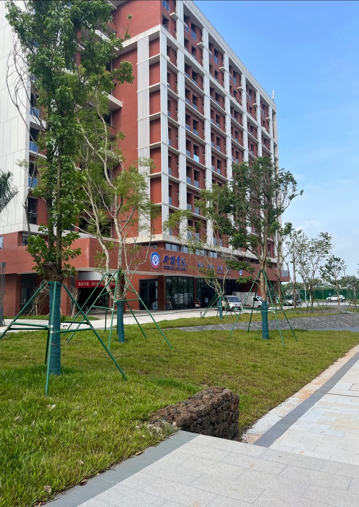
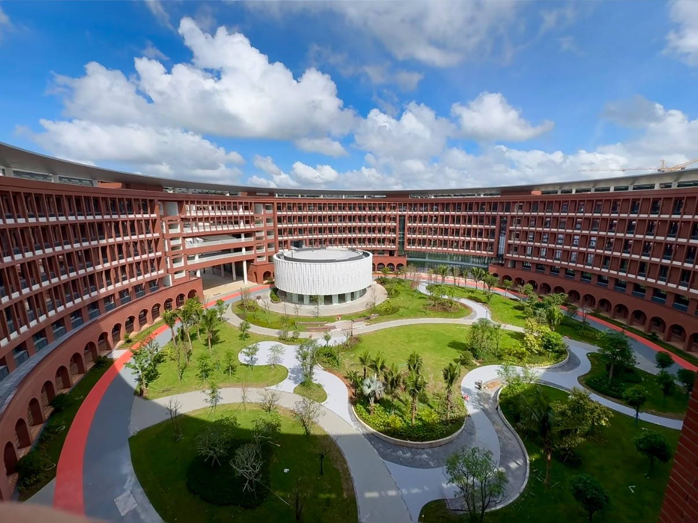
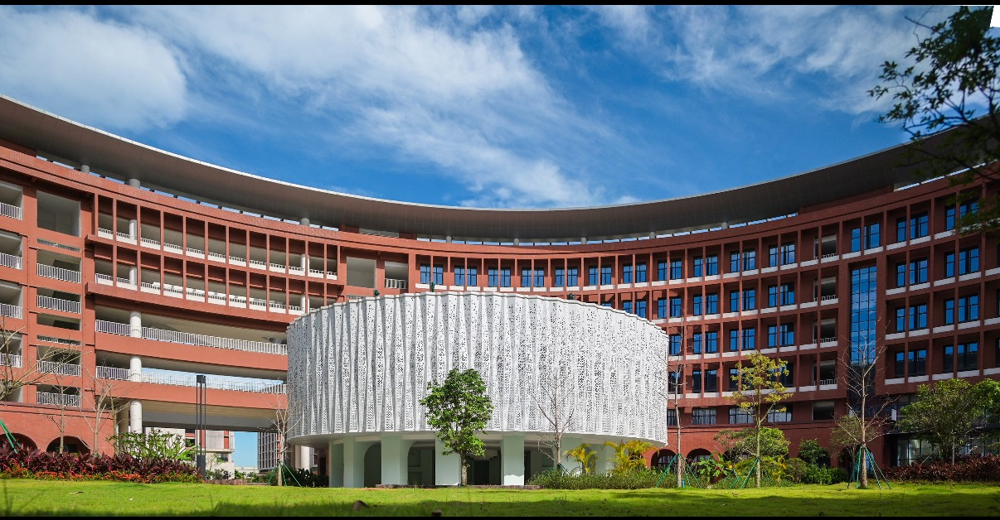

Field Evidence
楼前低碳场景
以草坪、行道树和校园建筑为试点素材，把学生行动、林地碳汇和区块链证书连接起来。

Project Positioning
碳链校园的核心不是单纯展示技术，而是把学生日常低碳行为转化为碳积分，再通过积分商城、公益证书、 林地碳汇展示和链上存证，形成一套“参与、激励、展示、认证”的绿色校园 ESG 闭环。
Pilot Site


Field Evidence
以草坪、行道树和校园建筑为试点素材，把学生行动、林地碳汇和区块链证书连接起来。
Pain Points
步行、光盘等低碳行为发生在日常里，缺少统一记录和持续反馈，参与感容易消失。
如果低碳行为只能停留在口号，学生很难形成长期习惯，需要积分兑换把行动变成即时回报。
学校的绿色校园建设需要可视化数据、公益证书和 ESG 叙事，才能被看见、被传播、被认可。
Project Operations
用户授权微信步数后，系统自动将步数兑换为碳积分；用户拍照上传光盘照片，经审核后发放碳积分。
碳积分可在积分商城中兑换校园文创礼品、公益证书、绿色校园纪念品等，让低碳行动形成正反馈。
展示校园各块林地的位置、面积、年固碳量等数据，让校园绿色资源成为可浏览、可理解的 ESG 资产。
用户选择认购碳汇后，获得带区块链存证哈希值的电子证书，学校也能沉淀绿色校园建设成果。
Interactive Prototype
小程序围绕“记录、积分、兑换、证书”展开：学生完成步行、光盘等低碳行为后获得碳积分， 可兑换校园文创礼品和公益证书，也可进入林地碳汇页面认购链上证书。
微信步数 8,260 · 光盘照片待审核 · 可兑换文创礼品
ESG HASH 9F3C-26A1
Innovation
从微信步数和光盘照片切入，低门槛记录校园里的真实低碳行为。
用碳积分连接校园文创、公益证书和低碳荣誉，让绿色行为有回报。
林地碳汇数据和区块链证书为学校提供可展示、可传播的绿色校园成果。
Deliverables
支持微信步数授权、光盘照片上传、积分累计和兑换入口。
展示校园林地位置、面积、年固碳量和绿色校园建设数据。
认购碳汇后生成带区块链存证哈希值的电子证书。
ESG Value
平台为学校提供低碳行为运营、积分兑换体系、林地碳汇展示和区块链证书服务。 学校可用这些数据展示绿色校园建设成果，回应 ESG 理念，并进一步开展校园公益与低碳教育活动。
Team
碳链校园——基于区块链的校园生态资产确权与轻量交易平台
负责低碳行为积分规则、林地碳汇数据整理和证书哈希存证，让数据可信。
负责小程序产品设计与功能实现，打通步数授权、照片上传、积分兑换和证书生成流程。
负责商业计划书、绿色校园叙事、ESG 价值包装和校方试点对接，让项目价值落地。